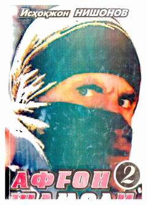

ASVatan himoyachilarining jasorati va tinchlik yo'lidagi kurashlari haqidagi detektiv roman.
Ushbu asar Isxoqjon Nishonovning «Afg'on shamoli» turkumiga kiruvchi ikkinchi kitob bo'lib, «Qasam» deb nomlanadi. Roman Vatan sarhadlarini qo'riqlayotgan huquqni muhofaza qilish organlari xodimlarining jasorati va tinchlik yo'lidagi kurashlari haqida hikoya qiladi.